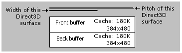

Although the terms width and pitch are often used informally, they have very important, and distinctly different, meanings. As a result, you should understand the meanings for each, and how to interpret the values that Direct3D uses to describe them.
Direct3D uses the D3DSURFACE_DESC structure to carry information describing a surface. Among other things, this structure is defined to contain information about a surface's dimensions, as well as how those dimensions are represented in memory. The structure uses the Height and Width members to describe the logical dimensions of the surface. Both members are measured in pixels. Therefore, the Height and Width values for a 640 x 480 surface are the same whether it is an 8-bit surface or a 24-bit RGB surface.
When you lock a surface using the IDirect3DSurface9::LockRect method, the method fills in a D3DLOCKED_RECT structure that contains the pitch of the surface and a pointer to the locked bits. The value in the Pitch member describes the surface's memory pitch, also called stride. Pitch is the distance, in bytes, between two memory addresses that represent the beginning of one bitmap line and the beginning of the next bitmap line. Because pitch is measured in bytes rather than pixels, a 640x480x8 surface has a very different pitch value than a surface with the same dimensions but a different pixel format. Additionally, the pitch value sometimes reflects bytes that Direct3D has reserved as a cache, so it is not safe to assume that pitch is just the width multiplied by the number of bytes per pixel. Rather, visualize the difference between width and pitch as shown in the following diagram.

In this diagram, the front buffer and back buffer are both 640x480x8, and the cache is 384x480x8.
When accessing surfaces directly, take care to stay within the memory allocated for the dimensions of the surface and stay out of any memory reserved for cache. Additionally, when you lock only a portion of a surface, you must stay within the rectangle you specify when locking the surface. Failing to follow these guidelines will have unpredictable results. When rendering directly into surface memory, always use the pitch returned by the IDirect3DSurface9::LockRect method. Do not assume a pitch based solely on the display mode. If your application works on some display adapters but looks garbled on others, this may be the cause of the problem.
For more information, see Accessing Surface Memory Directly (Direct3D 9).
Â
Â